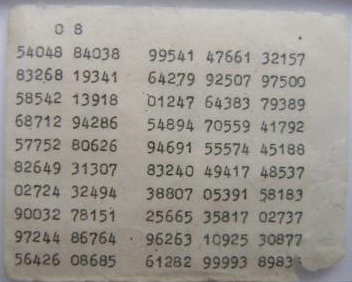

What-How
What's up!
It is time for discussing:
a technique which is claimed to be 'Unbreakable', if implemented properly,
a technique very famous among the military of World War II, and spies of Cold War,
a technique called - One Time Pad.
Why is it called 'pad'? We'll come to that in few minutes; but before that, let's see how 'simple' it is. (yet claimed to be Unbreakable!)
First, please, recall the Caesar cipher.
Done! OK. So, in caesar cipher, each letter in the message is 'shifted' by some number between 1 to 25, right! But can there be a very obvious improvement to it. Think. Think.
What if, instead of shifting each letter by the 'same' number (as we do in caesar cipher); each letter of the message is shifted by a 'Random' number! (from 0 to 25, where 'A' shifted by 0 = 'A'; and 'A' shifted by 25 = 'Z')
In the above lines, you have just read The Core Principle behind One Time Pad, i.e. to use a random shift number for each letter in message.
Let's take an example.
Suppose your message is "ATTACK". (Oh, that feels like War!)
Now, we need to shift each letter of this message by some random number. So, let's shift 'A' by 2, 'T' by 3, second 'T' by 17, and so on (remember: shift numbers are completely random).
Rewriting this 'random' sequence, it looks something like this: 2, 3, 17, 10, 22, 24.
OK. Now, how many numbers are in this sequence? Since, we want to shift 'each' letter in our message, we want numbers as many as letters. In other words, the length of this random-number-sequence needs to be same as the length of the message! That's an Important Point.
Back to shifting letters.
"ATTACK" shifted using the number sequence: "2,3,17,10,22,24" will become:- "CWKKYI".
(Remember that 'Z' shifted to 1 becomes 'A', i.e. we 'wrap-around' when the shifting goes beyond 'Z'.)
Here, "ATTACK" is the plaintext message, "2,3,17,10,22,24" i.e. our random number sequence is the Key, and the "CWKKYI" is our ciphertext.
So, this was One Time Pad! Really, this was it.
Note: Don't get confused, if you see, Keys like - 0203 1710 2224, or 02 03 17 10 22 24, or in some other formatting; because the technique is still the same.
Random?
One very important point is to determine- "how to get random number?"
Will you just go by your intuition? No, you shouldn't. (Actually, Yes, you can, if it's not much serious. But, if you want to make absolutely sure that noone can 'crack' your ciphertext, then, you shouldn't.)
Research shows that whenever we, humans come up with a sequence that we think to be 'random'; the statistical analysis proves us wrong, by revealing some pattern in that sequence. Meaning, we are NOT good at producing 'truly' random number sequence!!
So...what to do? Well, mostly, nowadays, many mathematical techniques are used to 'generate' 'almost'-random sequences. And, that's a separate field of study; so, we'll leave it there. Just remember, that use of 'truly' random sequence is also one of the major concern regarding the 'strength' of this technique.
Other Versions
In above example, we saw that our Key was a sequence of numbers. (2,3,17,10,22,24)
And, each of the shift-number is a random number between 0 to 25.
Does above statement rang a bell in your mind!
If not, it should. Because, the fact that each number is just between 0 to 25, means the number-sequence can also be written as a character-sequence or String.
So, let's do that.
If, '0' means 'A',
'1' means 'B',
'2' means 'C', and so on...
Then our sequence- 2,3,17,10,22,24 becomes: "CDRKWY"
That's it. In this way, our Key is now a 'string' (i.e. a sequence of characters), instead of a sequence of numbers; and that can also be used for One Time Pad.
Note that, in the above example, we used "0 for A, 1 for B, ...upto..., 25 for Z", but we can also use "1 for A, 2 for B, 3 for C, ..., 26 for Z". That's all upto us. But, whichever letter-to-number scheme we use, we must be consistent while using that.
So, that was a 'string' version of One-time-pad.
Other version exist as well (eg. instead of shifting our message's letters by some number; we can first convert our message to bits i.e. 1s and 0s, and then, use a random sequence of 'bits' as the Key, to 'XOR' with our message-bits to get the cipher-bits; and to decrypt, again 'XOR' the key-bits with the cipher-bits to get back the message-bits.... that's going too binary! Oh! Is that a new topic! We'll see that in detail, later.); So, yes, other versions exist as well, but the basic principle is same in all.
Unbreakable!
OK, so our principle is clear now; that, in this technique, we need to use a Key which can be either a random string or a random number-sequence, and which needs to be as long as the message itself. But is such a simple technique unbreakable?
Yes, it is. But, only, under some conditions:
1- Key is as long as the message. (Yes, already discussed)
2- Key is 'truly' random. (OK, strong mathematical function can be used)
3- Each Key is used ONLY ONCE, and both sender and receiver must destroy their key after one use. (Oh, that makes sense. Is that why it's called "one-time" pad!)
4- There should be only two copies of the key: one for the sender side, and another for the reciever side. In other words, the keys must be 'top-secret'. (How is it possible? We will discuss in just few minutes.)
Note that One Time Pads are not to be confused with One Time Passwords (which are very different things; and also, while One Time Pads are principally unbreakable, One Time Passwords are not!)
Why-such-name?
Now, knowing the conditions required for this technique to be really-unbreakable, it's time to explore the reason behind the name.
There is "Pad" in the name, because, the military, spies and others who used this technique, used to maintain, literally, paper-'pads' for printing, using and sending the Keys. Below are two examples of the pages from those pads. One image shows random String keys, while other shows random number-sequences as keys.

These 'Pads' used to be so important and confidential, that many physical methods were used, to make them highly secure and secret. In some cases, special inks that were invisible in natural light were used; in other cases, the pads were made with inflammable substance, so that they can be easily destroyed in times of danger (before the enemy can get their hands on it).
Sometimes, the pads were made to be very small; so small that it would require special magnifying lenses to read them. This was done in order to make these pads very portable by soldiers, spies and agents. An image of the small-sized Pad is shown below.

So, that was for the name "Pad". And it's called "One-time" because the pad with keys in it, was for one-time use only; and was destroyed after one use. The entries were erased/cut; and after complete use of the whole pad, the pad was burnt. (or in the worse case, swallowed by the soldiers!)
Really - "One Time" "Pad". That were the reasons behind this name.
Indeed, the strength of this technique is what made it the prime method of secret communication during World War II and Cold War; and that strength lies in the 'randomness' and 'same-as-message length' of the Keys used in this technique.
Next
In this technique, we were using a key (i.e. a number-sequence or a string) whose length was as long as the message itself, but what if, the key is shorter!
Of course, in that case, the 'unbreakability' will be gone, but yet, 'something' can be done. That 'something' is what we will see in the next post.
Bye till then.
:-)
Post-6 Ended.